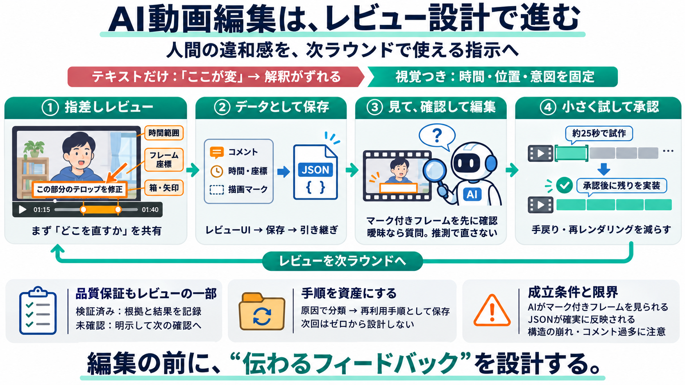

GitHub - desplega-ai/agent-swarm: Your Company Agentic Operating System · GitHub
## Repository files navigation GitHub Stars MIT License PRs Welcome Agent Swarm is the open-source, self-hosted AI com…

## Repository files navigation GitHub Stars MIT License PRs Welcome Agent Swarm is the open-source, self-hosted AI com…
# Swarm (experimental, educational) Important Swarm is now replaced by the OpenAI Agents SDK, which is a production-re…
Search / Sign in Sign up Appearance settings You signed in with another tab or window. Reload to refresh your session. Y…
[11:10] personally, uh, it's been like the best review loop flow I've ever experienced. [11:17] Um, and I think that's a…
# .github/workflows/auto-review.yml # name Automated Code Review on pull_request types[opened, synchronize] jobsswarm-re…